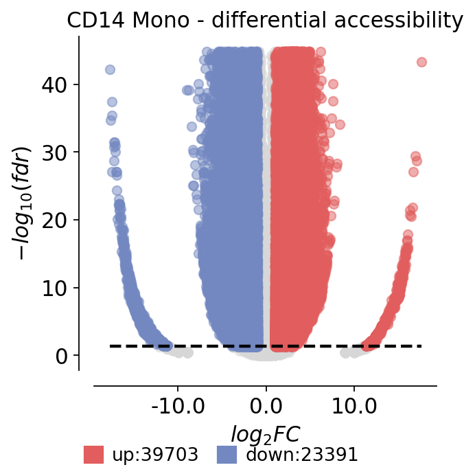

Marker peaks and differential accessibility#
Once cells are grouped (by cluster or annotated cell type), the natural question is which
regulatory regions define each group. ov.epi.tl.find_marker_features runs an ArchR-style
test — a Wilcoxon test of each peak against a bias-matched background of the other cells — to rank
the marker peaks of every group.
We use the annotated 10x PBMC 10k multiome ATAC peak matrix (cell_type already provided) so
the marker peaks can be read against known cell types:
rank marker peaks per cell type (
ov.epi.tl.find_marker_features)inspect the top markers and annotate them to their nearest gene
visualise one cell type’s differential accessibility as a volcano plot
summarise top marker accessibility across cell types as a heatmap
import warnings
warnings.filterwarnings('ignore')
import numpy as np
import pandas as pd
import matplotlib.pyplot as plt
import omicverse as ov
ov.epi.pl.plot_set()
print('omicverse', ov.__version__)
└─ 🔬 Starting plot initialization...
├─ Apply Scanpy/matplotlib settings
├─ Custom font setup
├─ Suppress warnings
├─
___________ .__
\_ _____/_____ |__| ____ ____ ____
| __)_\____ \| |/ _ \ / \_/ __ \
| \ |_> > ( <_> ) | \ ___/
/_______ / __/|__|\____/|___| /\___ >
\/|__| \/ \/
├─ 🔖 Version: 0.0.1rc1 📚 Tutorials: https://epione.readthedocs.io/
└─ ✅ plot_set complete.
omicverse 2.2.1rc1
1 · Load the annotated ATAC peak matrix#
atac, _ = ov.epi.datasets.pbmc10k_multiome()
print('ATAC peak matrix:', atac.shape)
atac.obs['cell_type'].value_counts()
ATAC peak matrix: (9631, 107194)
cell_type
CD14 Mono 2554
CD4 Naive 1382
CD8 Naive 1354
CD4 TCM 1113
CD16 Mono 442
NK 403
CD8 TEM_1 322
CD8 TEM_2 315
Intermediate B 300
Memory B 298
CD4 TEM 286
cDC 180
Treg 157
gdT 143
MAIT 130
Naive B 125
pDC 98
HSPC 17
Plasma 12
Name: count, dtype: int64
2 · Marker peaks per cell type#
find_marker_features returns a tidy table — one row per (group, peak) — with effect size
(log2_fc), detection fractions, and significance (fdr).
markers = ov.epi.tl.find_marker_features(atac, group_by='cell_type')
print('marker table:', markers.shape)
markers.head()
└─ [find_marker_features] group='CD4 Naive' | fg=1,382 cells | bg=1,382 cells (matched=no)
└─ [find_marker_features] group='CD4 TCM' | fg=1,113 cells | bg=1,113 cells (matched=no)
└─ [find_marker_features] group='CD4 TEM' | fg=286 cells | bg=286 cells (matched=no)
└─ [find_marker_features] group='CD8 Naive' | fg=1,354 cells | bg=1,354 cells (matched=no)
└─ [find_marker_features] group='CD8 TEM_1' | fg=322 cells | bg=322 cells (matched=no)
└─ [find_marker_features] group='CD8 TEM_2' | fg=315 cells | bg=315 cells (matched=no)
└─ [find_marker_features] group='CD14 Mono' | fg=2,000 cells | bg=2,000 cells (matched=no)
└─ [find_marker_features] group='CD16 Mono' | fg=442 cells | bg=442 cells (matched=no)
└─ [find_marker_features] group='HSPC' | fg=17 cells | bg=17 cells (matched=no)
└─ [find_marker_features] group='Intermediate B' | fg=300 cells | bg=300 cells (matched=no)
└─ [find_marker_features] group='MAIT' | fg=130 cells | bg=130 cells (matched=no)
└─ [find_marker_features] group='Memory B' | fg=298 cells | bg=298 cells (matched=no)
└─ [find_marker_features] group='NK' | fg=403 cells | bg=403 cells (matched=no)
└─ [find_marker_features] group='Naive B' | fg=125 cells | bg=125 cells (matched=no)
└─ [find_marker_features] group='Plasma' | fg=12 cells | bg=12 cells (matched=no)
└─ [find_marker_features] group='Treg' | fg=157 cells | bg=157 cells (matched=no)
└─ [find_marker_features] group='cDC' | fg=180 cells | bg=180 cells (matched=no)
└─ [find_marker_features] group='gdT' | fg=143 cells | bg=143 cells (matched=no)
└─ [find_marker_features] group='pDC' | fg=98 cells | bg=98 cells (matched=no)
marker table: (2036686, 13)
| group | feature | mean_fg | mean_bg | pct_fg | pct_bg | log2_fc | U | z | p_value | fdr | n_fg | n_bg | |
|---|---|---|---|---|---|---|---|---|---|---|---|---|---|
| 0 | CD4 Naive | chr1:816881-817647 | 0.017366 | 0.104197 | 0.009407 | 0.047033 | -2.584893 | 918951.5 | -5.984385 | 2.172087e-09 | 1.390224e-08 | 1382 | 1382 |
| 1 | CD4 Naive | chr1:819912-823500 | 0.103473 | 0.151954 | 0.047757 | 0.068017 | -0.554370 | 935616.5 | -2.279238 | 2.265292e-02 | 3.937566e-02 | 1382 | 1382 |
| 2 | CD4 Naive | chr1:825827-825889 | 0.002171 | 0.000000 | 0.002171 | 0.000000 | 11.084654 | 957035.0 | 1.732678 | 8.315291e-02 | 1.252705e-01 | 1382 | 1382 |
| 3 | CD4 Naive | chr1:826612-827979 | 0.397250 | 0.463097 | 0.184515 | 0.205499 | -0.221265 | 933151.0 | -1.511729 | 1.306028e-01 | 1.867460e-01 | 1382 | 1382 |
| 4 | CD4 Naive | chr1:841243-843059 | 0.117945 | 0.035456 | 0.064399 | 0.019537 | 1.733990 | 997784.5 | 5.876457 | 4.191396e-09 | 2.571794e-08 | 1382 | 1382 |
Top markers for a few cell types#
Filtering to significant, up-accessible peaks (fdr < 0.05, log2_fc > 0) and taking the top by
effect size gives each cell type’s most specific regulatory regions.
sig = markers[(markers['fdr'] < 0.05) & (markers['log2_fc'] > 0)]
top = (sig.sort_values('log2_fc', ascending=False)
.groupby('group').head(5))
for ct in ['CD14 Mono', 'Naive B', 'NK']:
if ct in set(top['group']):
print(f'\n=== {ct} top marker peaks ===')
print(top[top['group'] == ct][['feature', 'log2_fc', 'pct_fg', 'pct_bg', 'fdr']]
.to_string(index=False))
=== CD14 Mono top marker peaks ===
feature log2_fc pct_fg pct_bg fdr
chr18:400354-400952 17.587843 0.0950 0.0 4.203895e-44
chr2:126831558-126832185 17.074320 0.0635 0.0 1.981806e-29
chr9:124143849-124144330 16.884659 0.0650 0.0 4.058194e-30
chr10:116465495-116465971 16.686897 0.0600 0.0 7.918512e-28
chr18:25299007-25299800 16.587851 0.0485 0.0 1.317443e-22
=== Naive B top marker peaks ===
feature log2_fc pct_fg pct_bg fdr
GL000205.2:67888-69629 20.919981 0.552 0.0 3.561571e-18
chr11:60455290-60456088 20.652287 0.544 0.0 6.521199e-18
chr5:78727641-78728723 20.595142 0.504 0.0 3.093037e-16
chr18:76980792-76981819 19.896523 0.368 0.0 3.864268e-11
chr7:139714137-139715063 19.747145 0.320 0.0 1.753880e-09
=== NK top marker peaks ===
feature log2_fc pct_fg pct_bg fdr
chr1:162411943-162412452 19.116138 0.240695 0.0 4.920916e-23
chr10:34348914-34349332 18.956415 0.215881 0.0 1.906227e-20
chr15:69499406-69499933 18.823830 0.220844 0.0 5.866042e-21
chr15:98952272-98953616 18.816095 0.178660 0.0 1.082036e-16
chr1:162413846-162414255 18.616787 0.208437 0.0 1.096585e-19
3 · Annotate top marker peaks to their nearest gene#
A marker peak is most interpretable next to a gene name. We assign each top peak to the nearest gene TSS using the Gencode annotation.
import pyranges as pr
g = pr.read_gff3(str(ov.epi.data.hg38.annotation)).df
gene_ann = g[g.Feature == 'gene'][['gene_name', 'Chromosome', 'Start', 'End', 'Strand']].copy()
gene_ann.columns = ['gene_name', 'chrom', 'start', 'end', 'strand']
gene_ann['tss'] = np.where(gene_ann['strand'] == '+', gene_ann['start'], gene_ann['end'])
def nearest_gene(peak):
chrom, rng = peak.split(':'); s, e = rng.split('-')
center = (int(s) + int(e)) // 2
sub = gene_ann[gene_ann['chrom'] == chrom]
if sub.empty:
return ('NA', np.nan)
i = (sub['tss'] - center).abs().values.argmin()
row = sub.iloc[i]
return (row['gene_name'], int(abs(row['tss'] - center)))
top = top.copy()
top[['nearest_gene', 'dist_to_tss']] = [nearest_gene(p) for p in top['feature']]
top[top['group'].isin(['CD14 Mono', 'Naive B', 'NK'])][
['group', 'feature', 'log2_fc', 'nearest_gene', 'dist_to_tss']].head(15)
| group | feature | log2_fc | nearest_gene | dist_to_tss | |
|---|---|---|---|---|---|
| 1500690 | Naive B | GL000205.2:67888-69629 | 20.919981 | NA | NaN |
| 1410865 | Naive B | chr11:60455290-60456088 | 20.652287 | MS4A1 | 156.0 |
| 1473922 | Naive B | chr5:78727641-78728723 | 20.595142 | ENSG00000254170 | 12100.0 |
| 1440859 | Naive B | chr18:76980792-76981819 | 19.896523 | ENSG00000266844 | 6616.0 |
| 1488361 | Naive B | chr7:139714137-139715063 | 19.747145 | TBXAS1 | 62450.0 |
| 1293369 | NK | chr1:162411943-162412452 | 19.116138 | SH2D1B | 59.0 |
| 1298310 | NK | chr10:34348914-34349332 | 18.956415 | ELOBP4 | 139755.0 |
| 1320577 | NK | chr15:69499406-69499933 | 18.823830 | DRAIC | 36749.0 |
| 1321922 | NK | chr15:98952272-98953616 | 18.816095 | PGPEP1L | 54848.0 |
| 1293370 | NK | chr1:162413846-162414255 | 18.616787 | SH2D1B | 1912.0 |
| 688666 | CD14 Mono | chr18:400354-400952 | 17.587843 | ENSG00000265477 | 23763.0 |
| 700059 | CD14 Mono | chr2:126831558-126832185 | 17.074320 | TEX51 | 66992.0 |
| 746299 | CD14 Mono | chr9:124143849-124144330 | 16.884659 | ENSG00000234921 | 111565.0 |
| 657967 | CD14 Mono | chr10:116465495-116465971 | 16.686897 | HMGB3P8 | 25689.0 |
| 689404 | CD14 Mono | chr18:25299007-25299800 | 16.587851 | ENSG00000264434 | 2722.0 |
4 · Volcano plot for one cell type#
Plotting effect size against significance for all peaks tested in a single cell type (here CD14 monocytes) gives the familiar volcano view of differential accessibility.
# Differential accessibility for one cell type as an omicverse volcano plot.
ct = 'CD14 Mono'
res = markers[markers['group'] == ct].copy()
res = res.set_index('feature')
res['sig'] = np.where((res['fdr'] < 0.05) & (res['log2_fc'] > 1), 'up',
np.where((res['fdr'] < 0.05) & (res['log2_fc'] < -1), 'down', 'normal'))
ov.pl.volcano(res, pval_name='fdr', fc_name='log2_fc', pval_threshold=0.05,
fc_max=1.0, fc_min=-1.0, plot_genes_num=8,
title=f'{ct} - differential accessibility')
plt.show()
🌋 Volcano Plot Analysis:
Total genes: 107194
↗️ Upregulated genes: 39703
↘️ Downregulated genes: 23391
➡️ Non-significant genes: 44100
🎯 Total significant genes: 63094
log2_fc range: -17.75 to 17.59
fdr range: 0.00e+00 to 1.00e+00
⚙️ Current Function Parameters:
Data columns: pval_name='fdr', fc_name='log2_fc'
Thresholds: pval_threshold=0.05, fc_max=1.0, fc_min=-1.0
Plot size: figsize=(4, 4)
Gene labels: plot_genes_num=8, plot_genes_fontsize=10
Custom genes: None (auto-select top genes)
💡 Parameter Optimization Suggestions:
▶ Wide fold change range detected:
Current: fc_max=1.0, fc_min=-1.0
Suggested: fc_max=3.8, fc_min=-4.0
📋 Copy-paste ready function call:
ov.pl.volcano(result, pval_name='fdr', fc_name='log2_fc', fc_max=3.8, fc_min=-4.0)
────────────────────────────────────────────────────────────
{kind=link}

5 · Marker accessibility dotplot#
Taking the top marker peaks across cell types and rendering them as an omicverse dotplot
produces a block-diagonal pattern — each set of marker peaks is specific to its cell type.
# Top marker peaks per cell type as an omicverse dotplot (peaks as features).
topn = (sig.sort_values('log2_fc', ascending=False).groupby('group').head(5))
peaks = topn['feature'].unique().tolist()
ov.pl.dotplot(atac, var_names=peaks, groupby='cell_type', use_raw=False,
standard_scale='var', show=False)
plt.show()
{kind=link}
Summary#
stage |
function |
|---|---|
marker peaks per group |
|
peak → nearest gene |
Gencode annotation ( |
differential accessibility |
volcano of |
find_marker_features works equally on a peak matrix, a gene-score matrix or gene expression — so
the same call ranks marker peaks, marker gene-activities, or marker genes. For two-group designs
with replicates, ov.epi.tl.differential_peaks offers a pseudobulk pyDESeq2 test.